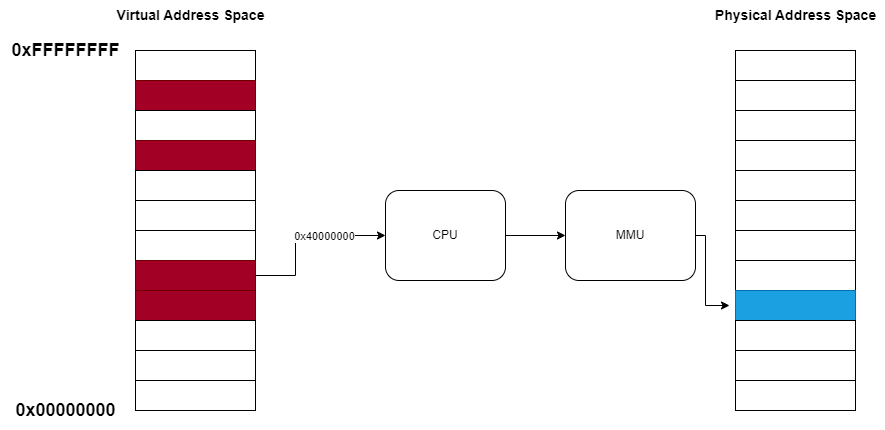
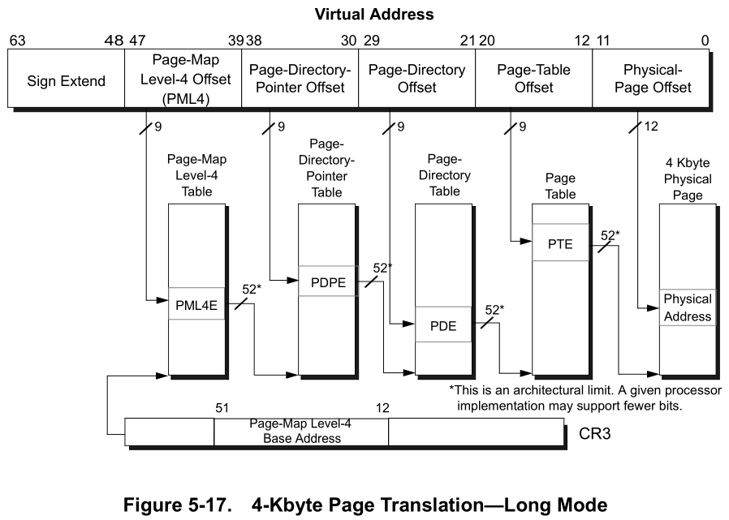

Memory Management - Part 1: Virtual memory and Paging concepts
Memory is an important part of a computer system that is used to store data. The process of memory management is critical because there is a limited amount of memory available to a computer system. One of the most important parts in the kernel of an operating system is the memory management part. In this section, the kernel has the task of making the memory available to the executive units (like processes or threads) by effectively communicating with the memory management unit in the processor, or in other words, allocating the memory to them.
Virtual Memory
Virtual memory is one of the memory management techniques in the operating system. Using this technique for memory management in operating systems makes the processes have the illusion that they have a very large space of memory at their disposal, when the main memory space can be much more limited. In this model, the operating system divides the virtual memory into smaller pieces called pages. The reason for this segmentation is to simplify the process of accessing different memory locations. Each of these pages can be considered equivalent to a location in main memory or secondary memory. This means that some memory pages of a process can be stored in RAM while others can be stored on disk. Figure 1 shows an abstract of this topic.
This approach offers two main benefits:
- Isolation: Each process operates within its own virtual address space, isolating it from other processes. This prevents one process from accessing or modifying the memory of another process unless explicitly permitted, enhancing security and stability.
- Efficiency: The operating system loads only the parts of a process’s memory that are actively being used into RAM, leaving less frequently used parts on disk. This optimizes the use of physical memory and ensures that more memory is available for other tasks.
Page Sizes in Virtual Memory
Modern operating systems use different page sizes to balance performance and flexibility. The size of a page impacts how memory is allocated and managed. For example, There are three common page sizes on Intel’s 64-bit architecture,
- Standard/Small Pages (4 KB): In Intel’s 64-bit architecture, the size of these pages is 4 kilobytes. These types of pages are most commonly used in virtual memory systems and are used as the basic unit of pages for most processes. The small size of these pages allows the operating system to manage memory accurately and optimally. Using this type of pages for programs that require a large amount of memory reduces system efficiency.
- Large Pages (2 MB): The size of these pages is 2 MB. These pages are usually suitable for programs that need to access large chunks of memory. Due to the larger size, fewer page tables are used for mapping, which reduces the operating system’s memory management burden. However, it should be noted that using larger pages reduces the flexibility of the operating system in memory management, because smaller parts of memory cannot be controlled accurately.
- Huge Pages (1 GB): the size of these pages is equal to 1 GB. Very large pages are used for applications that require access to very large volumes of data and are typically used in server systems or high-performance computing environments. By using huge pages, the need for a large number of page tables is eliminated, which reduces the operating system’s burden of memory management. Hence, it is suitable for extremely large applications such as very large databases, virtual machine disks and big data analysis. Also, for the same reason as the previous type, these pages are not flexible and are used only in special cases. The table below shows the size of pages in different architectures.
| Architecture | Small Pages | Large Pages | Huge Pages |
|---|---|---|---|
| x86-32 | 4 KB | 2 MB | 1 GB |
| x86-64 | 4 KB | 2 MB | 1 GB |
| ARM | 4 KB | 4 MB | - |
| ARM64 | 4 KB | 2 MB | 512 MB |
Memory Page States
In addition to different sizes, memory pages can exist in various states within the system. These states determine how the pages are used and whether they are available for allocation:
- Committed Pages: The Committed virtual memory pages are pages that are mapped to a frame in physical memory. These pages are available for use by the application and data is stored and processed in it. When an executive unit requests memory from the kernel, the operating system commits the memory for those pages so that the executive unit can use those pages to store and reuse its data.
- Reserved Pages: The Reserved pages occupy part of the virtual address space, but are not yet mapped to physical memory or paging space. These pages are reserved for future use, but are not committed until the application asks the operating system to use them. This helps to keep the address space available to the application without using physical memory unnecessarily. If the program uses these pages without requesting them to be committed, the operating system will close the process by sending a page fault exception error.
- Free Pages: The Free pages are actually free and are not assigned to any process. These pages are available to be allocated to applications by the operating system as needed. When an application requests memory, free pages can be reserved first and then committed as needed. As with the previous type, any access to these pages without reservation and commit requests will result in memory page fault.
By managing these page states, the operating system ensures that memory is allocated efficiently, reusing and swapping pages between RAM and disk when necessary.
Guard Pages
Guard pages are a specialized type of virtual memory page used to protect memory regions and manage dynamic memory growth. They are marked with a special protection mask that triggers an exception (STATUS_GUARD_PAGE_VIOLATION) when accessed, signaling that the boundary of committed memory has been reached.
This exception can be handled by the program using a try/except block, allowing it to take action such as committing more memory. Once the guard page is accessed and the exception is handled, the system typically commits more memory to meet the program’s needs, and the previously protected guard page becomes part of the committed memory. A new guard page is then set at the next boundary to continue the protection.
Guard pages are commonly used for managing stack growth in programs. A stack can reserve more memory than is immediately needed, committing additional pages dynamically as the program requires them, with guard pages ensuring that memory overruns are caught safely.
Reserved memory for guard pages has a minimal impact on system resources, as the memory is only committed when it is accessed, ensuring efficient resource usage.
Windows VMMap Example
Figure 2 in the article shows a screenshot from VMMap, a Windows tool for visualizing memory usage, highlighting how guard pages are visually distinct from other memory types and are used to manage the growth of memory regions dynamically.
Page Table Hierarchy and Address Translation
In general, in virtual memory technique, there are two types of addressing methods called virtual/logical address and physical address. The virtual address belongs to the virtual space of the memory that is dedicated to the processes, and the physical address is the exact location of the desired data in the physical memory. Although the process of allocating memory, creating and managing pages is the responsibility of the operating system, the task of translating the virtual address to the physical address is the responsibility of a hardware part called Memory Management Unit (MMU). The work of this hardware is address translation, access control and cache control. In the address translation section, the operating system can access the location of the physical address by giving the virtual address to the MMU and can perform its desired actions. Figure 3 shows the form in which the MMU is considered a separate hardware unit and the processor uses it to access the memory.
|  |
|---|
In the x86-64 architecture, while the virtual address is theoretically 64-bits, only the lower 48 bits are used bacause of limitations in current implementations. This means that 256 TB of virtual memory is addressable and accessible (That’s why there’s a free gap between user-space and kernel-space). The virtual address is translated in 5 different levels in the page tables, but the Windows operating system supports only 4 levels, which we will examine only those four levels below.
What’s the use of page levels?
Systems with a large address space, such as x86-64, need solutions to manage all virtual memory space optimally. Dividing this space into different levels means that large parts of the memory that are not used do not need to be mapped directly and only a part of the addressing space is managed dynamically.
Page Levels in the Intel x86-64 Architecture
As mentioned, 4 different levels for memory pages in the Windows operating system can be considered, which are:
- Page Map Level 4 (PML4)
- Page Directory Pointer Table (PDPT)
- Page Directory Table (PDT)
- Page Table (PT)
PML4
This table is the first level of page table of x86-64 systems, which has 512 entries and each entry can point to a PDP table on the second level. In fact, PML4 manages the overall map of access to larger parts of memory. The main use of this level is to divide a very large address space into smaller parts, and there is no need for the operating system to manage the entire space directly. Each entry in PML4 covers about 512 GB of virtual address space.
PDPT
PDPT is the second level of the page table and each entry from this level points to a PD table. The PDP table also has 512 entries and each entry can manage 1 GB of virtual space. If Huge pages are used, this level can directly point to physical addresses without the need for lower levels, and in this case, each entry in the PDP table can handle a 1 GB page.
PDT
The third level of the PDT page table has 512 entries like the previous levels. Each entry in the PD table can handle 2 MB of virtual addressing space. Also, each entry points to a PT. If large 2MB pages are used, the PD table can point directly to physical addresses and there is no need for a PT level. In this case, the translation process becomes faster and simpler because fewer levels are required for translation.
PT
This level is the last level of the page table where each entry points to a 4 KB page of physical memory. PT also has 512 entries, and each entry points to a 4KB physical frame. This hierarchical structure efficiently manages large virtual memory spaces and reduces the complexity of maintaining large page tables.
|  |
|---|
The virtual address is divided into 5 parts and each part is used to index into a different level of the page table hierarchy. For example, in x86-64 systems, the address translation process in paging level works as follows:
- Bits 47-39: Used to index into the PML4.
- Bits 38-30: Used to index into the PDPT.
- Bits 29-21: Used to index into the PDT.
- Bits 20-12: Used to index into the PT.
- Bits 11-0: Represent the offset within the 4 KB page.
Example: Translating a 64-bit Virtual Address
Consider a 64-bit virtual address like 0x00007FFFFFFFFFFF. This address is divided into segments, with each segment used to index into a different level of the page table hierarchy. The breakdown is as follows:
| Segment | Binary Value | Purpose |
|---|---|---|
| PML4 | 000000000 |
Index into the PML4 table |
| PDPT | 111111111 |
Index into the PDPT |
| PDT | 111111111 |
Index into the PDT |
| PT | 111111111 |
Index into the PT |
| Offset | 111111111111 |
Offset within the page |
This structure means that the processor uses these bits to navigate the multi-level page table hierarchy. The PML4 entry is used to locate the corresponding PDPT entry, and so on, until the final physical page is identified, and the offset is applied to access the specific data within the page.
Control Registers for Paging
On x86 and x86-64 architectures, control registers (specifically CR0, CR2, CR3, and CR4) play a crucial role in managing the paging system and overall memory management. These registers are used to configure how the processor handles virtual memory, paging, and other essential tasks related to memory protection and execution.
CR0 Register
The CR0 register controls several critical operating modes of the CPU, including enabling and disabling paging. Its relevant flags include:
- PG (Paging Enable): This flag controls whether paging is enabled or disabled. When set, the processor translates virtual addresses into physical addresses using the page tables.
- PE (Protection Enable): This flag, when set, enables protected mode, which allows for the use of paging and access control based on privilege levels.
- WP (Write Protect): This flag, when set, prevents supervisor-level code from writing to user-mode pages, providing an additional layer of memory protection.
CR2 Register
The CR2 register holds the faulting address in the event of a page fault. When a page fault occurs (such as when a process tries to access a non-committed or non-existent page), the memory address that caused the fault is stored in CR2, allowing the operating system to handle the exception properly and decide how to proceed (e.g., by loading the page from disk or terminating the process).
CR3 Register
The CR3 register contains the physical address of the base of the page directory. This register is crucial in paging because it allows the CPU to locate the page tables needed for virtual address translation. The page directory is a top-level data structure that the memory management unit (MMU) uses to start the process of translating a virtual address into a physical address. The contents of CR3 are updated whenever a context switch occurs to change the address space of the running process.
In x86-64 systems, CR3 is responsible for pointing to the base of the PML4 (Page Map Level 4) table, which is the top level of the page table hierarchy.
CR4 Register
The CR4 register controls various advanced CPU features, many of which are related to memory management and protection mechanisms. Some of the relevant bits in CR4 include:
- PAE (Physical Address Extension): This flag enables 36-bit physical addressing, which allows for larger amounts of physical memory to be addressed than the standard 32-bit limit.
- PSE (Page Size Extension): This flag allows the use of large pages (4 MB in x86, 2 MB or 1 GB in x86-64 systems), which can improve performance by reducing the overhead of managing smaller 4 KB pages.
- SMEP (Supervisor Mode Execution Protection): This bit prevents supervisor-mode code (e.g., kernel code) from executing user-mode pages, which enhances security by reducing the risk of privilege escalation attacks.
- NXE (No-Execute Enable): This flag enables support for the NX (No-Execute) bit in page tables, which marks pages as non-executable, preventing code execution from regions of memory not intended to contain executable code (such as the stack or heap).
Together, these control registers form the backbone of paging and memory protection mechanisms in modern x86 and x86-64 systems. They ensure efficient and secure handling of memory by controlling how virtual addresses are translated, how exceptions are handled, and how memory protection is enforced.
Example 1: Examining virtual and physical memory using Windbg
To practically work with addresses in kernel mode using Windbg on a Windows 10 virtual machine, the first step is to change the context to the desired process. Here’s a detailed step-by-step explanation:
Step 1: Get the List of Processes
To begin, I attached to my Windows 10 VM via Windbg in kernel mode. To check the pages of a process in kernel mode, we first need to change the context to that process. Use the command !process 0 0 to get a list of all processes running on the system.
Step 2: Change Context to a Specific Process
For this example, I am changing the context to cmd.exe. To do so, I need the address of the EPROCESS object for cmd.exe, which is ffffdd8291b29300. Then, I use the following command to change the context: Windbg will prompt me to enter g to complete the context switch.
Step 3: Find Virtual Address Descriptors (VAD)
Next, we need to find the page addresses. The !vad command provides details about the virtual address descriptors (VAD) of the process.
Step 4: Retrieve Page Table Entry (PTE)
From the VAD list, I randomly select one address and use the !pte command to retrieve the page table entry. For instance:
Step 5: Determine PLM4 and CR3 Values
To find the physical address for the page, we need the PLM4 address (FFFFEFF7FBFDFDD8) and the CR3 register value. The CR3 value is obtained by running:
r cr3
The CR3 value is 00000000ab994002. To convert this into a usable form, the first 12 bits should be set to zero, resulting in 00000000AB994000.
Step 6: Convert Virtual Address to Physical Address
Using the !vtop command, I can convert the virtual address to a physical address:
!vtop 00000000AB994000 FFFFEFF7FBFDFDD8
The output shows the translation of the virtual address FFFFEFF7FBFDFDD8 to the physical address ab994dd8.
Step 7: Verify Using Physical and Virtual Dump Commands
Finally, to verify the data in both the physical and virtual addresses, use the !dq command for the physical address:
!dq 00000000ab994dd8
And for the virtual address:
dq FFFFEFF7FBFDFDD8
Both commands will display the corresponding memory content:
Example 2: Finding the Physical Address of a Page Using the PFN Formula in Windows
In the context of Windows memory management, PFN stands for Page Frame Number. It’s an index that represents a page’s location within physical memory, used by the memory manager to map virtual memory addresses to physical addresses. Each PFN points to a specific page in physical memory, helping the system to translate a virtual address into the actual physical address in RAM.
When dealing with page table entries in Windows, the PFN typically occupies a part of the PTE. For example, in a typical 4 KB page configuration, the PFN, combined with the page offset, helps calculate the exact physical address.
To translate a virtual address to a physical address using PFN, we can use the following formula:
Physical address = (PFN * Page_Size) + Offset
Let’s examine how this applies with a sample C program that allocates memory at a specific virtual address:
#include <windows.h>
#include <stdio.h>
int main() {
LPVOID lpAddress = (LPVOID)0x50000;
LPVOID allocatedMemory = VirtualAlloc(
lpAddress,
4096,
MEM_COMMIT | MEM_RESERVE,
PAGE_READWRITE
);
if (allocatedMemory == NULL) {
printf("Memory allocation failed at 0x50000. Error: %d\n", GetLastError());
}
else {
printf("Memory successfully allocated at address: 0x%p\n", allocatedMemory);
memset(allocatedMemory, 0x7f, 4096);
}
getchar();
if (allocatedMemory != NULL) {
VirtualFree(allocatedMemory, 0, MEM_RELEASE);
printf("Memory freed.\n");
}
return 0;
}
This code allocates a 4KB page at virtual address 0x50000 and sets each byte to 0x7f. After running this code, you can check the PTE for this address in WinDbg:
2: kd> !pte 0x0000000000050000
VA 0000000000050000
PXE at FFFFD8EC763B1000 PPE at FFFFD8EC76200000 PDE at FFFFD8EC40000000 PTE at FFFFD88000000280
contains 8A00000024489867 contains 0A0000011CCE4867 contains 0A00000114BE5867 contains 81000000360E6867
pfn 24489 ---DA--UW-V pfn 11cce4 ---DA--UWEV pfn 114be5 ---DA--UWEV pfn 360e6 ---DA--UW-V
Here, the PFN for the page table entry (PTE) is 0x360e6. Since each page is 4KB, we can calculate the physical address:
Physical Address = 0x360e6 * 0x1000 + 0 = 0x360e6000
To verify, use the dq command to view the contents at both the virtual and physical addresses:
2: kd> dq 0x50000
00000000`00050000 7f7f7f7f`7f7f7f7f 7f7f7f7f`7f7f7f7f
00000000`00050010 7f7f7f7f`7f7f7f7f 7f7f7f7f`7f7f7f7f
00000000`00050020 7f7f7f7f`7f7f7f7f 7f7f7f7f`7f7f7f7f
00000000`00050030 7f7f7f7f`7f7f7f7f 7f7f7f7f`7f7f7f7f
00000000`00050040 7f7f7f7f`7f7f7f7f 7f7f7f7f`7f7f7f7f
00000000`00050050 7f7f7f7f`7f7f7f7f 7f7f7f7f`7f7f7f7f
00000000`00050060 7f7f7f7f`7f7f7f7f 7f7f7f7f`7f7f7f7f
00000000`00050070 7f7f7f7f`7f7f7f7f 7f7f7f7f`7f7f7f7f
2: kd> !dq 0x360e6000
#360e6000 7f7f7f7f`7f7f7f7f 7f7f7f7f`7f7f7f7f
#360e6010 7f7f7f7f`7f7f7f7f 7f7f7f7f`7f7f7f7f
#360e6020 7f7f7f7f`7f7f7f7f 7f7f7f7f`7f7f7f7f
#360e6030 7f7f7f7f`7f7f7f7f 7f7f7f7f`7f7f7f7f
#360e6040 7f7f7f7f`7f7f7f7f 7f7f7f7f`7f7f7f7f
#360e6050 7f7f7f7f`7f7f7f7f 7f7f7f7f`7f7f7f7f
#360e6060 7f7f7f7f`7f7f7f7f 7f7f7f7f`7f7f7f7f
#360e6070 7f7f7f7f`7f7f7f7f 7f7f7f7f`7f7f7f7f